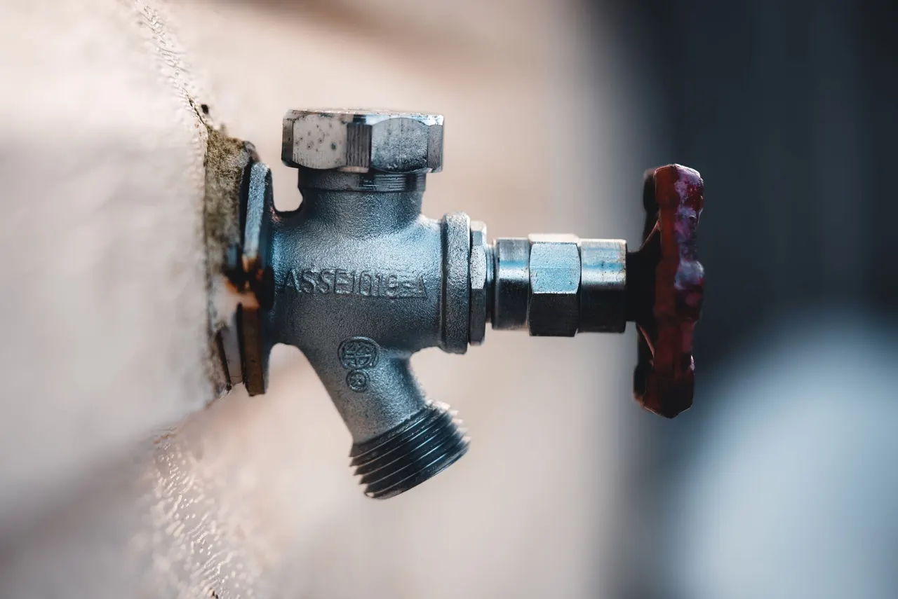

For homes
We replace failed main lines for homeowners and tenants across Arlington Heights. You get the camera footage, a fixed price, and a clean work area when we leave.
- Basement drain backing up
- Repeat root clogs
- Old clay tile laterals
When your main line backs up, sewer line replacement Arlington Heights IL is the permanent fix. We run a sewer camera, show you the break, and replace the failed pipe with PVC or ABS rated for Cook County code. Homeowners in Scarsdale, Northgate and Old Arlington Heights call us when root intrusion and collapsed clay tile stop being a snake-and-pray problem. Same-day inspection, upfront pricing, and a line that drains like new.
 Camera the full runMark the lineTest before backfill
Camera the full runMark the lineTest before backfillEvery replacement job is scoped in writing before we dig. Here is what is standard on a residential main-line replacement, and what we handle as an add-on when the site calls for it.

We record the full run with a RIDGID sewer camera, mark the line on the surface, and call 811 for utility locates. You see the footage and approve the scope before any digging starts.
We pull the Village of Arlington Heights plumbing permit and meet the inspector on site. You get the signed-off paperwork at the end, which matters when you sell the house.
We install 4-inch PVC or ABS pipe at correct fall, glue and test every joint, and add a cleanout at the house if you do not have one. The connection to the city main gets a proper transition coupling.
Trenchless jobs use two small access pits. Open-cut jobs trench only the failed section. We compact soil and restore the surface, whether that is sod, gravel, or concrete patch.
We run water through the new line, camera it again, and confirm flow before we leave. You get the recording and a written summary of what was replaced and why.
The approach is the same for a home and a business. What changes is the access, the schedule and who needs the paperwork.
We replace failed main lines for homeowners and tenants across Arlington Heights. You get the camera footage, a fixed price, and a clean work area when we leave.
We replace main lines for restaurants, offices, and multi-unit properties. Work is scheduled around your hours so service keeps running and the line gets fixed right.
A plain-language look at what Sewer Line Replacement involves and when it is needed.
See how it worksSewer line replacement Arlington Heights IL means pulling the failed section of main line out of the ground and putting in new pipe that carries waste from your house to the municipal sewer. We cut out collapsed clay tile, orangeburg, or root-packed cast iron, then set PVC pipe with proper fall so gravity does the work. Most residential runs are 4-inch pipe buried 3 to 8 feet deep, and every joint gets glued and pressure-tested before we backfill.
Arlington Heights homes built before 1970 often still have original clay tile laterals, and tree roots in older parkways find those joints within a season. If you are searching for sewer line replacement near me Arlington Heights IL because the basement floor drain gurgles every time you run the washer, that is a main-line symptom, not a fixture problem. We camera the line first so you know exactly what you are paying to replace.
A main line is replaced when the pipe itself has failed, not when it is merely blocked.

You get a camera inspection, a written scope, and a crew that shows up when we say. Here is the sequence from first call to final test.
We feed a RIDGID sewer camera down the cleanout and record the full run. You watch the monitor with us and see the crack, the offset joint, or the root mass. This takes 30 to 45 minutes and tells us whether you need a spot repair or a full main sewer line replacement Arlington Heights IL.

We mark the line on the surface with paint and flags, then call 811 so utilities locate gas and electric before we dig. You see exactly where the work happens and how much lawn or concrete is involved. Approval happens before any shovel hits dirt.

For trenchless work we dig two pits, one at the house and one at the city connection, and pull new pipe through the old bore. For open-cut we trench the failed section only. Either way we protect the work area and keep the spoils contained.

We lay 4-inch PVC or ABS pipe at the correct fall, glue every joint, and tie into the municipal stub. New sewer line installation Arlington Heights IL jobs get a cleanout at the house and a proper transition coupling at the city main so the connection is code-correct.

We run water through the full line, camera it again, and confirm flow before backfilling. Then we compact the soil, restore the surface, and walk you through the footage. Most residential replacements finish in one to two days.

Move across a circle, or focus it and press Enter, for an illustrative thermal view of the photograph.

Records the full interior of the line so we can see cracks, offsets, roots, and bellies before quoting any work.

Marks the exact depth and path of the line on the surface so excavation stays minimal and utilities stay clear.

Clears grease, scale, and roots at high pressure when the camera shows buildup rather than structural failure.

Cuts and joins pipe cleanly during repairs and tie-ins, with PEX crimping tool and tube cutter for supply-side work.

Confirms the new line and connected fixtures hold pressure and flow correctly before we close out the job.
Thermal views are illustrative, generated from the photographs.
Clears branch-line blockages so we can isolate whether the problem is in the fixture drain or the main line.
We never quote a replacement without footage. The camera shows the actual failure, and you watch the monitor with us so the recommendation is based on what is in the pipe, not a guess.
New pipe is pulled through the old bore from two small pits. This keeps lawns, driveways, and mature landscaping intact and shortens the job to a single day in most cases.
When the line is badly bellied or collapsed, open-cut is the honest answer. We trench only the failed section, set pipe at correct fall, and restore the surface.

A 1955 ranch in Scarsdale with original clay tile and two mature maples in the parkway.
We camera the line, find root intrusion at three joints, and pull new PVC trenchless from two pits at the house and the city connection.
Outcome: One-day replacement, lawn and driveway untouched, and no backups through the following spring thaw.

A pre-sale sewer scope in the 60005 ZIP comes back with a collapsed section under the front walk.
We replace the failed run, pull the permit, and provide the inspection sign-off plus before-and-after footage for the buyer.
Outcome: The deal closes on schedule with documented proof the main line is sound.

A restaurant near the Arlington Heights Business District has repeat grease clogs and a slow-draining floor sink.
We jet and camera the line, find a bellied section, and replace it overnight so the kitchen never closes.
Outcome: Normal service resumes the next morning with a line that drains at full capacity.

A townhome in Northgate has sewage backing into the lowest floor drain during heavy rain.
We camera the main, identify a break where roots entered a joint, and replace the damaged section with new pipe and a cleanout.
Outcome: No backups during the next storm cycle, and the HOA has documentation for its records.

A homeowner in Old Arlington Heights is searching for affordable sewer pipe replacement in Arlington Heights, Illinois after two emergency snaking calls in one year.
We compare repair versus replacement costs from the camera footage and replace the failing run with PVC at correct fall.
Outcome: The repeat emergency calls stop, and the annual maintenance cost drops to a routine camera check.

Arlington Heights sits on heavy clay soil that holds water and shifts with freeze-thaw cycles, which is hard on buried pipe. Homes built in the 1950s and 1960s around Old Arlington Heights and Scarsdale often still have original clay tile laterals, and parkway maples send roots straight into those joints.
Winter frost drives lines 3 to 8 feet deep, so we plan excavation around ground conditions and protect the work area from freezing overnight. Cook County and the Village require a plumbing permit and inspection, and we handle both.
If you are comparing trenchless sewer line replacement Arlington Heights IL options, the deciding factor is usually the camera footage: usable pipe path means trenchless, collapsed or bellied means open-cut. Either way, we restore the surface and test the line before we leave.

Before: A 1958 ranch had backed up three times in two years. Camera footage showed roots through four joints and a cracked section under the parkway. The homeowner was on a first-name basis with a drain cleaning company.
After: We pulled new 4-inch PVC trenchless from two pits in one day. Post-job camera showed a clean, root-free line. No backups in the two years since, and the lawn grew back over the access points.
An annual camera check catches any new root growth early. Keeping parkway trees trimmed back from the line helps too.
Before: A pre-sale sewer scope found a collapsed section under the concrete front walk. The buyer's agent flagged it, and the closing was at risk. The seller needed a documented fix fast.
After: We replaced the failed run, pulled the permit, and passed inspection in three days. The signed-off paperwork and before-and-after footage went straight to the buyer, and the sale closed on schedule.
Keep the inspection report with your home records. A camera check every two to three years confirms the line stays clear.
Before: A restaurant had repeat grease clogs and a slow floor sink. Camera inspection found a bellied section holding waste. Snaking cleared it for a week at a time, then it came back.
After: We replaced the bellied run overnight with new pipe at correct fall. The kitchen never closed. Flow testing showed full capacity, and the repeat clog calls stopped.
Scheduled hydro jetting every six months keeps grease from rebuilding. We camera the line annually to confirm the fall is holding.
Most main-line calls come down to a handful of failures. If any of these sound familiar, the line is telling you it is done.
A new main line ends repeat backups and restores full drainage.
A patched line with root intrusion backs up again within 12 to 18 months. New PVC pipe with solvent-welded joints gives roots nothing to grab, so you stop scheduling the same drain cleaning Arlington Heights call every spring.
Trenchless sewer replacement Arlington Heights pulls new pipe through the old path from two small pits instead of trenching 40 feet of lawn. Most jobs leave the driveway, sidewalk, and mature landscaping intact, and we restore the two access points the same day.
A failed lateral shows up in a pre-sale sewer scope and kills deals. Replacing it with documented pipe material, depth, and camera footage gives a buyer proof the main line is sound, which matters in Arlington Heights where so much housing stock dates to the 1950s.
Clear records you can keep and share.
Recorded footage of the line before and after
Written note of pipe material and depth
Signed inspection paperwork for your files
Confirmation the new line drains correctly
The camera tells you whether the pipe has failed or is simply blocked. That distinction decides the job.
One damaged section, rest of line sound
Pipe material failing along the run
Usable path, minimal digging
A list like this tells people straight away whether you cover their street. Not listed? Call and ask: it only takes a minute.
Based in Arlington Heights and covering the places around it. Pick one for local details.
Length of the run, depth, pipe material, concrete cutting, and whether the city connection needs work all move the number. We camera the line first and give you a fixed price before any digging starts.
A typical home takes one to two days from dig to final test. Trenchless pulls are often done in a single day because there is less excavation and less backfill. Longer runs, deep lines, or concrete removal can push it to three days. We tell you the schedule upfront and keep you posted.
Yes, in most cases. Trenchless sewer replacement Arlington Heights pulls new pipe through the old line from two small access pits, leaving your lawn and driveway intact. It works when the existing pipe path is usable and the line is not badly bellied. We confirm suitability from the camera footage before recommending it.
Yes. Cook County and the Village of Arlington Heights require a plumbing permit for main-line replacement, and the work has to be inspected. We pull the permit, meet the inspector, and hand you the signed-off paperwork. Unpermitted sewer work can complicate a home sale, so we do not skip it.
Other services from the same team.
Call (224) 643-9856 and we will camera your line, show you the problem, and give you a fixed price before we dig.
Call (224) 643-9856 or email us and we will get back to you fast. Tell us what is going on and we will tell you what it takes to fix it.